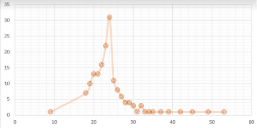
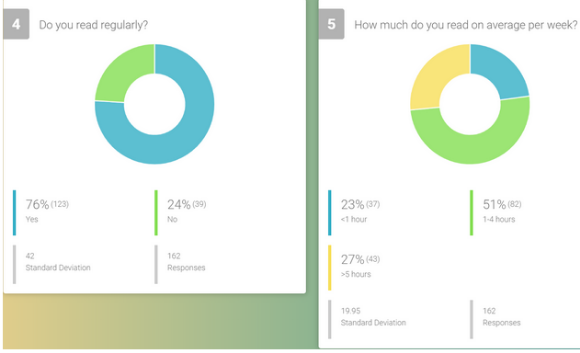
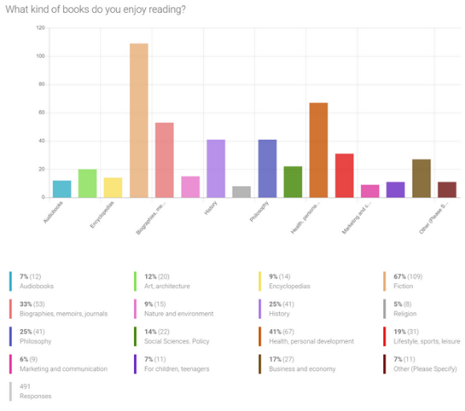
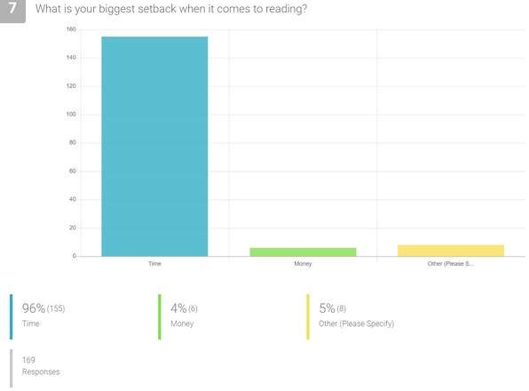
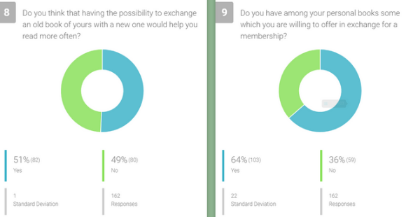
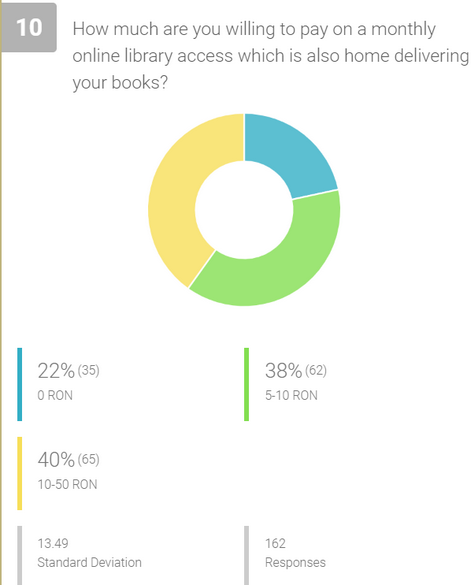
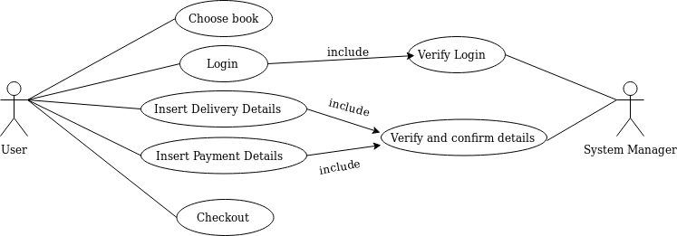
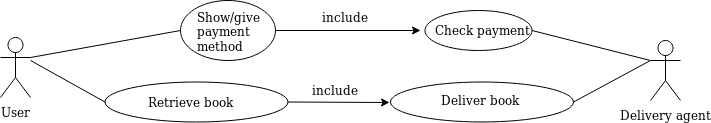

A reader lives a thousand lives before he dies ... The man who never reads lives only one
George R.R. Martin
Milestone 1 - Description
The problem
Romanian editors are consistently complaining about the fact that the book market is very low, being placed the last in Europe, behind smaller countries like Hungary or the Czech Republic. Romanians neither buy nor read many books. In fact, these two are completely different things, although the polls show otherwise, considering the low number of visitors in public libraries.
One of the reasons may be the things that people enjoy buying better than books. Time is another similar reason, as it is never enough, especially when buying books or reading are not on the top of the priorities list.
Book a Book is a solution
Our idea represents a solution to these problems: an online library that enables any user to place him/herself only at a click away from a book ready to be read.
The cost related issue may be solved by simply donating books for a monthly membership. As long as the membership is active, the user can borrow any book, and this will help our library grow.
Another option for those who can not be apart from their books is to pay for the membership. For starters, we will promote the first option as much as possible because it serves our purpose: to grow the number and diversity of our books.
Our target customers
Nowadays, the reading is either of electronic devices (mobile phones, e-readers, computer displays) or of the printed word from ink such as books, magazines or newspapers.
Book a Book is a project targeting people who have a passion for reading. The clients for this application are the people who wish to read but they don’t have time to go and search for the desired book and want to have the book delivered at their doors.
Our competition
The 3 big competitors for Book a Book are:
Booklender who offers the possibility of renting a number of books for a membership paid monthly (the more expensive the membership the more number of books you can have at one time)
Amazon who offers the possibility of renting a book for a fixed price dependent on the desired book
Bookster who is focused for the corporations, helping their employees to rent a book and have it at the company headquarters once a week
Why us ? Our advantage over the competition
In comparison with all these companies, Book a Book offers you the possibility to rent a book by having a monthly membership or by giving a book of your own and we will also bring the book to your door because we understand how important your time is.
Key metrics
Daily, weekly, or monthly active users on application or website (DAU/WAU/MAU)
Average time spent on your website
Returning visitors to application or website
User satisfaction
Average revenue per account
Number of logins
Monthly recurring revenue
Cost structure
Our startup has both variable and fixed costs.
In the fixed costs category we can find the salaries for our employees, the bank and legal charges, the software, the server and the domain name acquisition.
In the variable costs category we can identify the advertising and promotions, the delivery services of the books and the books replacement in case of destroying.
Revenue streams
In this company the revenue will come from 3 income streams:
Monthly paid membership (which is the main income stream that we’ll have)
Ads for the people which don’t have paid membership and are renting books by giving one in return(most ads we’ll be related with books and maybe some of them will be partnerships with some audio books websites)
Milestone 2 - Validation
Identification of the problem
According to a study from Romania, over half of the people in 2016 haven’t read any book. Knowledge is power: we believe that with our idea, people can be encouraged to improve themselves and read more.
Our solution
Considering all the possibilities that would have an impact on society, we thought of something innovative which would motivate people to improve themselves by reading. Taking into consideration our survey, most of them had a “time difficulty”. Book a Book can help the ones who don’t want to waste time by going to the library, searching for a book in stores or staying in queues to buy books. With our application, we believe that people would be more motivated to read more.
Our plan for customer discovery
We decided that we would gather our information from interviews and an online form. We wanted to reach a larger variety of people and we figured that an online form was the best and most efficient way to do it. We established a set of questions and then spread the form on multiple facebook groups and amongst some of our friends. In this way people of different ages and different domains of activity would fill it.
Description of the process
We collected information using online questionnaires and having face-to-face interviews. Over 160 people responded to our online survey and the age range of the ones who responded is between 18 and 53 years old. Even though 53 is the highest age that responded to our survey, talking face to face with some people over 58 who were kind enough to talk to us we discovered that they might be interested in our application. After the interviews, we realised that the application might interest a larger segment of people, the people who know how to browse the internet or who know own and know how to use a smartphone and like to read (probably not older that 65-70 years old).
We can cover a vast segment including various ages, but this did not surprise us, considering that reading applies to any age. Taking into consideration the fact that young people are more active online than the others, we concluded that for now, we should focus on people that are not more than 30.

X axe - age, Y axe - number of users
Regarding the professional field, we have been glad to learn that our form have reached to people from various domains of activity. From our stats derives the observation that there are engineers, doctors, teachers, and students who have shown interest for an online library.
76 % of the participants to this study have affirmed that they read on a daily basis, and 51 % have said they read 1 to 4 hours a week. This make us believe that there will be a continuum of borrowings monthly.

Regarding the literary preferences, they vary and can be identified below.

96 % said time is the greatest factor against reading. We believe that us delivering the books they like to the location of their choice will help them.

We have also seen some sort of encouragement in the answers related to the idea of exchanging books. More than half of them think that a borrow- exchange type of activity would help them read more. 64% are willing to offer books for a monthly access, which makes us have faith in our idea.

If 64 % of the participants to this study are willing to offer books in exchange for access, from our stats, the rest are willing to pay for it.

Are we ready to move to the Customer Validation stage?
Taking into account the fact that 51% of the people who took the survey were willing to exchange an old book for a new one, 64% agreed to offering an old book for a membership and that 78% were willing to pay a monthly subscription, we think that we are ready to take this to the next step, Customer Validation.
Milestone 3 - Wireframes
Milestone 4 - UX
Interviews questions (in Romanian)
1. Ce varsta ai?
2. Cate ore citesti pe saptamana in medie?
3. Ai folosit vreodata Kindle? Daca da, ce avantaje si dezavantaje ai observat?
4. Poti sa ne spui cateva titluri de carti & autori care ti-au placut ?
5. Ce planuiesti sa citesti in continuare?
6. Daca ai imprumutat carti, ce sursa ai folosit? (prieteni, biblioteca, Bookster)
7. Care sunt cele mai importante 2 metode de achizitionare/ imprumut a cartilor ? (biblioteca, bookster, librarii, internet, etc.)
8. Ai donat vreodata una sau mai multe carti ? Daca da, unde?
9. Cat timp ai petrecut ultima oara incercand sa cumperi/ imprumuti o carte?
10. Cand ai primit ultimele 2 pachete livrate prin curier ? Cat timp ai petrecut ducandu-te la posta si care a fost experienta avuta?
11. Cati bani dai pe carti pe an?
12. Cate carti ai cumparat in ultimele 6 luni?
13. Cate carti ai dat/luat cu imprumut in ultimele 6 luni?
14. Ce fel de carti citesti (beletristica, dezvoltate personala etc.)?
15. Numeste doi prieteni care ar avea nevoie sa imprumute o carte.
Face-to-face interviews (in Romanian)
1. Georgiana Valdulescu
Blog: jurnalul-unei-cititoare.ro Insta: @jurnaluluneicititoare Bookclubs: Clubul de lectură Nemira, Clubul de carte Paladin și clubul de carte #bookclub organizat de @cartideiubit Descriere: Georgiana Vlădulescu este o cititoare pasionată și blogger de carte de peste 7 ani. Adoră poveștile fantastice care îi rămân în minte mult după ultima pagină. De asemenea, îi place să facă schimb de recomandări cu alți prieteni cititori.
Raspunsuri:
1. 25 de ani
2. 7-8 ore
3. Da, am folosit. Îmi place pentru că e ușor și portabil și are lumină integrată. Dezavantajul este că având doar un număr care reprezintă procentajul rămas din carte, nu ai impresia că avansezi prin roman, așa cum ai când miști semnul de carte prin volum.
4. Seria Roboții a lui Isaac Asimov, volumul Peregrinările lui Tuf de George RR Martin, seria Demon a lui Peter V Brett și cărțile lui Flavius Ardelean (Acluofobia, Bizaroproze) și Marian Coman (Haiganu, Omulețul din perete)
5. Volumul Argintul preschimbat de Naomi Novik și volumul 4 al seriei Demon
6. Am împrumutat de la prieteni și de la bibliotecă.
7. Cumpăr cărți de la târgurile de carte și din librării online.
8. Am donat cărți pentru o școală dintr-o zonă rurală, la inițiativa unei bloggerițe de carte.
9. Vreo 10 minute pentru o comandă online :)
10. Am primit un colet luna trecută și unul acum câteva zile. Ambele au venit prin curier direct acasă. La prima n-a avut probleme, la a doua a trebuit să aștept o zi în plus, pentru că în prima zi, curierul a ieșit devreme din tură -_-. La poșta am primit colete cu cărți drept cadou de la amici din alte orașe. Experiența nu e neplăcută, dar transportul durează mai mult și la poșta mereu e coadă :)
11. Pe an, cam 1500 de lei
12. In ultimele 6 luni, in jur de 30
13. De dat cu imprumut, una, de luat 0
14. Citesc beletristică (sf, fantasy, thriller)
15. Andreea Pandelea și Ana Mărgulescu (ele sunt @andreeapandeleabooks & @martipaan)
2. Ioana Culic
PhD student la Politehnica, Bucuresti
Raspunsuri:
1. 27
2. 5
3. Da, am folosit. Avantaje: multe carti care ocupa putin spatiu, usor de transportat. Dezavantaje: uit sa il incarc si uneori trebuie sa astept sa se incarce cand vreau sa citesc, nu pot fi impartite cartile cumparate de pe amazon.
4. Autori favoriti: Isaac Asimov, Rodica Ojog Brasoveanu. Carti favorite: Wuthering Heights, Frankenstein, Dune
5. Lolita
6. Biblioteca
7. Librarii, Internet
8. Nu
9. 30 minute
10. Ultimele pachete le-am primit in august. Nu am primit pachete la posta.
11. 300-500
12. 4 carti
13. Nu am dat cu imprumut, am luat vreo 6 carti cu imprumut
14. Beletristica si de specialitate (IT)
15. Radu Jinga
3. Lucia Popa
PhD student, Facultatea de Litere Profesie: Profesoara limba romana si engleza
Raspunsuri:
1. 26
2. 7 ore
3. Nu am folosit niciodata kindle, prefer cartea in format fizic.
4. Agatha Christie, Ann Cleeves, Shakespeare, D.H. Lawrence, Guy de Maupassant, E.A. Poe si J.P. Sartre sunt cativa dintre autorii pe care ii citesc cu placere.
5. Pe lista viitoare de lecturi se afla romane de Ann Cleeves.
6. Folosesc orice sursa imi este la indemana, atat bookster, cat si prieteni sau biblioteca
7. Le achizitionez atat din librarii, cat si online.
8. Da, am donat kilograme intregi de carti unor anticariate.
9. Putin...pentru ca, de obicei, stiu exact ce caut.
10. Am primit pachetele de curand, insa le-am primit acasa. Nu m-as duce la posta.
11. Intre 500 si 1000 ron.
12. In jur de 5
13. 4
14. Beletristica
15. Nu am prieteni care sa citeasca asa des.
4. Cretu Alexandra
Web developer, Bucuresti
Raspunsuri:
1. 25 ani
2. 5 ore
3. Nu am folosit niciodata acest device. In general prefer sa citesc o carte in format fizic sau, in cazul in care o gasesc doar pe internet in format pdf, o descarc si o citest pe tableta.
4. Sylvia Day mi-a placut cel mai mult ca si autor. In rest imi place sa citesc romane de dragoste scrise de diversi autori sau carti despre dezvoltare personala.
5. Inca nu am ceva planuit...voi vedea ce carte random imi face cu ochiul
6. Am imprumutat de la prieteni sau pe Bookster.
7. De obicei , cand achizitionez o carte o fac de pe internet sau din librarii.
8. Nu am donat pana acum niciodata vreo carte. Pe cele pe care le-am citit si mi-au placut foarte mult imi place sa le tin in biblioteca si sa le mai rasfoiesc din cand in cand.
9. Destul de putin, intrucat de obiceii cand ma decid sa cumpar o carte stiu deja ce trebuie sa caut
10. Nu am primit in ultimul timp carti prin curier intrucat am fost sa le achizitionez personal din librarie. Singurele dati in care am primit carti au fost la birou livrate de cei de la Bookster.
11. Cam 200 lei max pt ca majoritatea cartilor pe care le citesc le imprumut
12. Nu am cumparat nici o carte in ultimele 6 luni.
13. Am imprumutat vreo 5 carti
14. In general citesc beletristica si carti despre dezvoltare personala
15. Din pacate prietenii mei nu prea mai citesc
User Persona
Kevin
26 years old, lives in Bucharest
Kevin is single and has two cats
Lawyer, Earnings: 1500 euro/month
What is Kevin doing in his free time ?
Kevin likes to read minimum a book per month
He used Kindle and he likes it, but he prefers to read from an actual book. He’s an old fashioned guy at heart, who likes to hold a book in his hands and feel the pages when he turns them.
He reads Romantic, Mystery, Fantasy, Historical, Adventure books
He would like to read more Fantasy books
He usually borrows books from friends or libraries
He searches them online and he also search them in the bookstore
His book collection is always growing and he donates books to make room for some new ones
His last experience was in a bookstore. He spent time going from his office to the bookstore and back to his home after searching for 15 minutes for his book of choice
Kevin’s last experience was with the post office. He waited in line for 10 minutes but in the end he got his package
Kevin bought more than 12 books in the last 6 months
I borrowed a few books from my friends
User stories
As an active reader, I want to exchange my old books for new ones.
As someone with a busy schedule, I want to spend as little time as possible finding the book I want so that I will have more time reading it.
As someone who doesn’t read very often, I want access to books at any given time without putting too much effort into it.
As a non-corporate worker, I also want to rent books by the week/month without having to pay them in full.
Use cases
User - System Manager

User - Delivery agent

User flows
I search for “Book a Book” or “vreau sa inchiriez o carte” / ”serviciu inchiriere carti” and go on the website/download the app.
I register and search for the book I want to read next.
I give a book that I have already read in exchange for the one that I want / I have a monthly paid membership and I can rent it without having to pay anything else.
The book is delivered to the specified address.
I provide feedback and share my user-experience to help it grow.
Our amazing team
Sabina Horincar [sabina.horincar@gmail.com]
Frontend developer
Sabina is our frontend developer who is responsable with the design, graphics and visual elements for Book a Book. Flexibility, adaptability, artistic vision and always showing up with a smile. These are the words that describe our colleague the best.
Larisa Stanciu [larisa.ioana@yahoo.com]
Backend developer
Larisa is the backend developer of the project in charge with the server side logic. She is a patient person with a passion for code who manage to schedule all her tasks in a most efficient way possible.
Alina Pirlog [alina.pirlog.95@gmail.com]
Backend developer
Alina is our newest member of the team. She enjoys working on interesting and challenging projects that enable her to apply and further her skills.
Andrei Furtuna [andreifurtuna2@gmail.com]
Product manager
Andrei is the product manager of our project - one of his main responsibilities is monitoring the performance and progress of the project. He is the kind of person who is always present for everyone, ready to help and lead the ones in need.
Teodor Constantin [teo.cons98@gmail.com]
Product owner
Teodor is the product owner of Book a Book - in this startup, is role is to ensure the management of the project. Teodor is a visionary, trustworthy person who is convinced that Book a Book can be a success.
Cristian is the tester of our team in charge with the performance and tests of the project. Perseverance, the ability to organize and prioritize tasks. This is the best way to describe Cristian in a few words.

 I register and search for the book I want to read next.
I register and search for the book I want to read next.